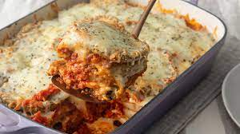

Eggplan Parm

Description
"She wasn't a great cook, but she made eggplant great"
Ingredients
- 2 eggplants
- 3 eggs, beaten
- 2 cups Italian seasoned breadcrumbs
- 1 jar Marinara Sauce
- 1 lb shredded mozzarella
- 3/4 cups grated parmesan
- fresh basil leaves
- olive oil
Steps
- Preheat oven to 350 degrees with rack set in center position of oven.
- Heat 1/2" oil over medium high heat in a large skillet. (If you have two skillets you can use both to speed this up.)
- Dip eggplant slices in egg and then press into breadcrumbs, shaking off excess.
- Place slices in hot oil. (They should fit comfortably in pan without touching.)
- Fry about a minute and a half per side, or until golden brown, then transfer to a paper towel lined plate.
- Repeat with the remaining eggplant, adjusting the heat as necessary.
- Spray a 9" x 11" baking dish with cooking spray.
- Spread a thin layer of marinara sauce on the bottom of the baking dish, and arrange eggplant slices over the sauce.
- Cover the eggplant with a layer of mozzarella, parmesan cheese and repeat until all ingredients are used up.
- Bake 20-30 minutes until cheese is bubbly.
- et rest 10 minutes before serving and garnish with fresh basil leaves.